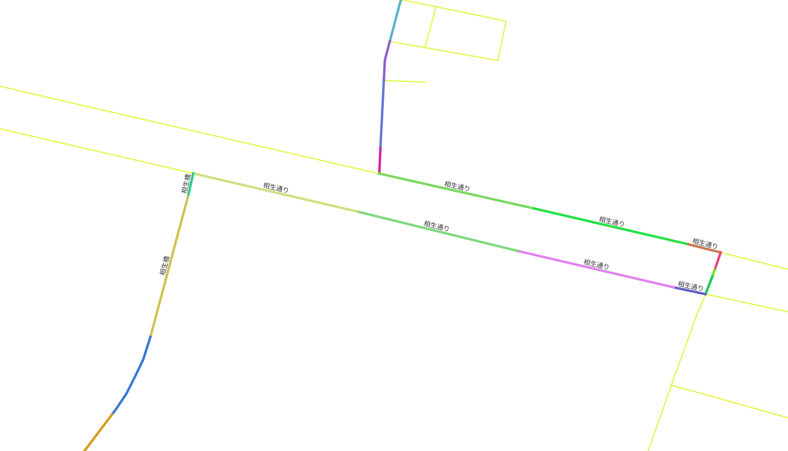
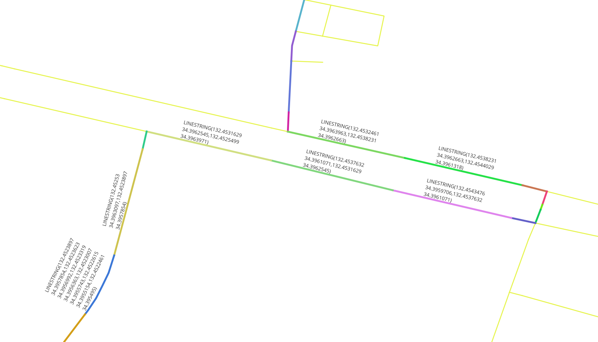
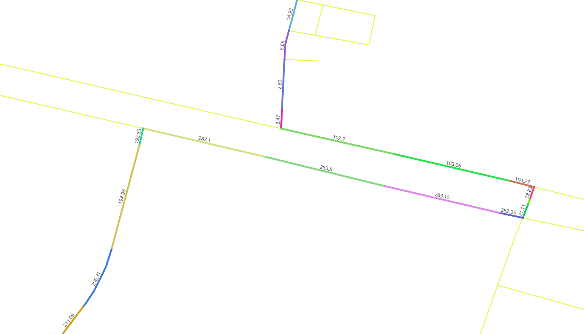
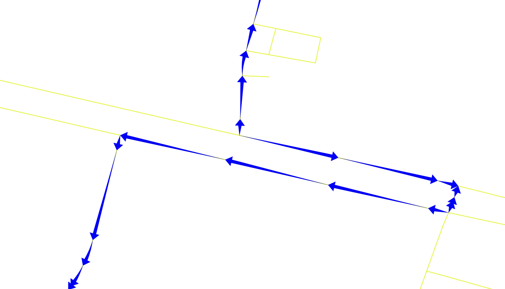
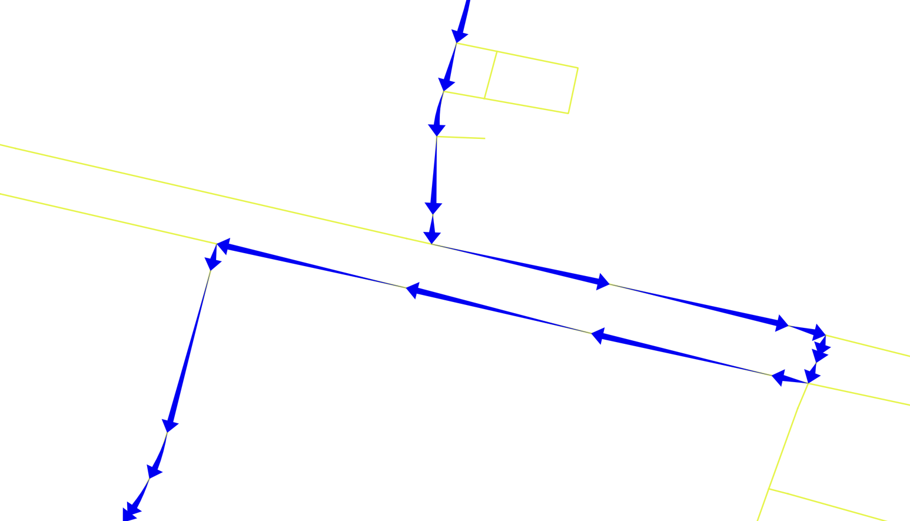
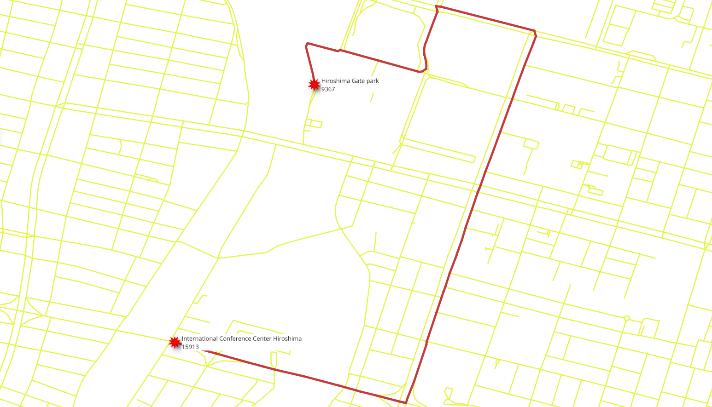

5. SQL function¶
{kind=link}

While pgRouting functions provide a low-level interface, developing for a higher-level application requires these requirements to be represented directly in the SQL queries. As these SQL queries get more complex, it is desirable to store them in PostgreSQL stored procedures or functions. Stored procedures or functions are an effective way to wrap application logic, in this case, related to routing logic and requirements.
5.1. The function requirements¶
The function will wrap pgr_dijkstra.
The function will use:
vehicle_netvehicle_penalized_net
The function returns the following routing information:
seq- A unique identifier of the rowsid- The segment’s identifierseconds- Number of seconds to traverse the segmentname- The segment’s namelength- The segment’s lengthazimuth- The azimuth of the segmentreadable- The geometry in human readable form.geom- The routing geometry
Design of the function
The function to be created wrk_dijkstra with the following input parameters and
output columns:
Input parameters
Parameter |
Type |
Description |
|---|---|---|
|
BIGINT |
The identifier of the departure location. |
|
BIGINT |
The identifier of the destination location. |
Output columns
Name |
Type |
Description |
|---|---|---|
|
INTEGER |
A unique number for each result row. |
|
BIGINT |
The edge identifier. |
|
FLOAT |
The number of seconds it takes to traverse the segment. |
|
TEXT |
The name of the segment. |
|
FLOAT |
The length in meters of the segment. |
|
FLOAT |
The azimuth of the segment. |
|
TEXT |
The geometry in human readable form. |
|
geometry |
The geometry of the segment in the correct direction. |
5.2. Additional information handling¶
When the application needs additional information, like the name of the street,
JOIN the results with other tables.
5.2.1. Exercise 1: Get additional information¶
Problem
Create a function that gets all the required information
Solution
The function returns the columns asked.
Rename
pgr_dijkstraresults to application requirements names.LEFT JOINthe results withvehicle_netto get the additional information.LEFT JOINto include the row withid = -1because it does not exist onvehicle_net
-- DROP FUNCTION wrk_dijkstra(regclass, bigint, bigint);
CREATE OR REPLACE FUNCTION wrk_dijkstra(
IN source BIGINT, IN target BIGINT,
OUT seq INTEGER, OUT id BIGINT,
OUT seconds FLOAT, OUT name TEXT, OUT length FLOAT,
OUT azimuth FLOAT, OUT readable TEXT,
OUT geom GEOMETRY
)
RETURNS SETOF record AS
$BODY$
WITH
results AS (
SELECT seq, edge AS id, node, cost AS seconds
FROM pgr_dijkstra(
-- on purpose to have wrong direccionality
'SELECT * FROM vehicle_net',
source, target)
)
SELECT
seq, id, seconds, name, length,
degrees(ST_azimuth(ST_StartPoint(geom), ST_EndPoint(geom))),
ST_AsText(geom),
geom
FROM results
LEFT JOIN vehicle_net USING (id)
ORDER BY seq;
$BODY$
LANGUAGE SQL;
5.3. Using the function¶
5.3.1. Exercise 2: Route geometry (binary format)¶
{kind=link}

Problem
Get the geometries of the route from International Conference Center Hiroshima to Hiroshima Gate park
Solution
Select the column
geom.
SELECT seq, geom FROM wrk_dijkstra(4128, 7508);
seq | geom
-----+--------------------------------------------------------------------------------------------------------------------------------------------------------------------------------------------------------------------------------------------------------------------------------------------------------------------------------------------------------------------------------------------------------------------------------------------------------------------------------------------
1 | 0102000020E610000005000000887E1244828E604030E53224DD3241402BB2E77C828E6040AA7EA5F3E1324140105F8143838E6040EDC49BEBEA3241405B4AF14C838E6040CE2FEF16ED3241403DEC2A49838E60400FA37B31EF324140
2 | 0102000020E6100000030000009AEC9FA7818E6040B2BAD573D2324140DE2E4503828E6040444E5FCFD7324140887E1244828E604030E53224DD324140
3 | 0102000020E6100000020000003E682C50818E60406749DB53CD3241409AEC9FA7818E6040B2BAD573D2324140
4 | 0102000020E610000003000000942F6821818E604040AEC387C83241409A4B6029818E60401B704C05CB3241403E682C50818E60406749DB53CD324140
5 | 0102000020E610000002000000FA3C9006818E60402DD2C43BC0324140942F6821818E604040AEC387C8324140
6 | 0102000020E6100000020000004411F7FD808E6040B1602C1DBD324140FA3C9006818E60402DD2C43BC0324140
7 | 0102000020E6100000020000004411F7FD808E6040B1602C1DBD3241406B9505B8858E6040E380A7DAB8324140
8 | 0102000020E6100000020000006B9505B8858E6040E380A7DAB8324140A456F3778A8E6040EBF36272B4324140
9 | 0102000020E610000002000000A456F3778A8E6040EBF36272B4324140BFE83C748B8E604003F4B171B3324140
10 | 0102000020E610000002000000300043458B8E60400B47904AB1324140BFE83C748B8E604003F4B171B3324140
11 | 0102000020E61000000200000030E939338B8E604082AB3C81B0324140300043458B8E60400B47904AB1324140
12 | 0102000020E610000002000000FA038AFD8A8E60400C811255AE32414030E939338B8E604082AB3C81B0324140
13 | 0102000020E610000002000000FA038AFD8A8E60400C811255AE3241408460FA038A8E6040B896242AAF324140
14 | 0102000020E6100000020000008460FA038A8E6040B896242AAF3241401B04673A858E6040511B30A3B3324140
15 | 0102000020E6100000020000001B04673A858E6040511B30A3B332414056687B4F808E60404832AB77B8324140
16 | 0102000020E61000000200000056687B4F808E60404832AB77B8324140DC89ED497B8E6040585DE223BD324140
17 | 0102000020E610000002000000DC89ED497B8E6040585DE223BD324140AFCE31207B8E6040364BB846BA324140
18 | 0102000020E610000002000000AFCE31207B8E6040364BB846BA32414083D1F6F9798E6040FD9D9218A9324140
19 | 0102000020E61000000600000083D1F6F9798E6040FD9D9218A9324140308E80C0798E6040D5867945A632414000AEBF80798E604023CED435A4324140A74E513F798E6040ADD1BC2DA2324140ADF71BED788E60403D08A63FA0324140CB27D0CC788E6040A25D85949F324140
20 | 0102000020E61000000E000000CB27D0CC788E6040A25D85949F324140B1AC8FE2778E6040EC0786BD9A324140433058BB778E6040D5B14AE99932414034D36295778E6040FF1C8B1299324140D8AA1386778E6040F38876BA983241408495AF70778E604000091E3A98324140D865F84F778E6040246F6F6D973241405290E91A778E60402AD6BA1E963241402BDA1CE7768E604072FE81CD943241406DD62A0B708E6040C5DE307667324140973ECFFA6F8E6040B3171B0467324140D0D556EC6F8E60404F52AA8E663241404D3C56DF6F8E6040C00D8C176632414056AE015B6F8E6040106157EE60324140
21 | 0102000020E61000000200000056AE015B6F8E6040106157EE603241408E45894C6F8E60401D77A5C05D324140
22 | 0102000020E6100000020000008E45894C6F8E60401D77A5C05D324140AFCF9CF5698E60401E543DF438324140
23 | 0102000020E610000002000000AFCF9CF5698E60401E543DF438324140A486DB46688E604095DD825B2D324140
24 | 0102000020E610000002000000A486DB46688E604095DD825B2D32414057C1B9D0668E60406564DA4823324140
25 | 0102000020E61000000200000057C1B9D0668E60406564DA4823324140523530A8658E60400A1E95511B324140
26 | 0102000020E610000002000000523530A8658E60400A1E95511B324140D83BED3A658E6040940D107118324140
27 | 0102000020E610000002000000D83BED3A658E6040940D107118324140161AE31E668E60407784D38217324140
28 |
(28 rows)
5.3.2. Exercise 3: Route geometry (human readable)¶
Problem
Get the geometries in readable form of the route from International Conference Center Hiroshima to Hiroshima Gate park
Solution
Select the column
readable.
SELECT seq, readable FROM wrk_dijkstra(4128, 7508);
seq | readable
-----+---------------------------------------------------------------------------------------------------------------------------------------------------------------------------------------------------------------------------------------------------------------------------------------------------------------------------------------------
1 | LINESTRING(132.4534016 34.3973737,132.4534287 34.3975205,132.4535234 34.3977942,132.4535279 34.3978604,132.4535261 34.3979246)
2 | LINESTRING(132.453327 34.3970475,132.4533707 34.397211,132.4534016 34.3973737)
3 | LINESTRING(132.4532853 34.3968911,132.453327 34.3970475)
4 | LINESTRING(132.453263 34.3967447,132.4532668 34.3968207,132.4532853 34.3968911)
5 | LINESTRING(132.4532502 34.3964915,132.453263 34.3967447)
6 | LINESTRING(132.4532461 34.3963963,132.4532502 34.3964915)
7 | LINESTRING(132.4532461 34.3963963,132.4538231 34.3962663)
8 | LINESTRING(132.4538231 34.3962663,132.4544029 34.3961318)
9 | LINESTRING(132.4544029 34.3961318,132.4545232 34.3961012)
10 | LINESTRING(132.4545008 34.3960355,132.4545232 34.3961012)
11 | LINESTRING(132.4544922 34.3960115,132.4545008 34.3960355)
12 | LINESTRING(132.4544666 34.3959452,132.4544922 34.3960115)
13 | LINESTRING(132.4544666 34.3959452,132.4543476 34.3959706)
14 | LINESTRING(132.4543476 34.3959706,132.4537632 34.3961071)
15 | LINESTRING(132.4537632 34.3961071,132.4531629 34.3962545)
16 | LINESTRING(132.4531629 34.3962545,132.4525499 34.3963971)
17 | LINESTRING(132.4525499 34.3963971,132.45253 34.3963097)
18 | LINESTRING(132.45253 34.3963097,132.4523897 34.3957854)
19 | LINESTRING(132.4523897 34.3957854,132.4523623 34.3956992,132.4523319 34.3956363,132.4523007 34.3955743,132.4522615 34.3955154,132.4522461 34.395495)
20 | LINESTRING(132.4522461 34.395495,132.4521344 34.3953473,132.4521157 34.395322,132.4520976 34.3952964,132.4520903 34.3952859,132.4520801 34.3952706,132.4520645 34.3952462,132.4520392 34.3952063,132.4520145 34.3951661,132.4511772 34.3937824,132.4511694 34.3937688,132.4511625 34.3937548,132.4511563 34.3937406,132.4510932 34.3935831)
21 | LINESTRING(132.4510932 34.3935831,132.4510863 34.3934861)
22 | LINESTRING(132.4510863 34.3934861,132.4504345 34.3923631)
23 | LINESTRING(132.4504345 34.3923631,132.4502291 34.3920092)
24 | LINESTRING(132.4502291 34.3920092,132.4500507 34.3917018)
25 | LINESTRING(132.4500507 34.3917018,132.4499093 34.3914587)
26 | LINESTRING(132.4499093 34.3914587,132.4498572 34.3913709)
27 | LINESTRING(132.4498572 34.3913709,132.4499659 34.3913425)
28 |
(28 rows)
5.3.3. Exercise 5: Get the azimuth¶
{kind=link}

There are many geometry functions in PostGIS, the workshop coveres some
of them like ST_AsText, ST_Reverse, ST_EndPoint, ST_Azimuth.
Problem
Get the azimuth of the geometries of the route from International Conference Center Hiroshima to Hiroshima Gate park
Solution
The function returns
azimuth.
SELECT seq, azimuth FROM wrk_dijkstra(4128, 7508);
seq | azimuth
-----+--------------------
1 | 12.73457031595872
2 | 12.88167838952638
3 | 14.929137020200196
4 | 8.660856980306795
5 | 2.894005474811734
6 | 2.4660464340668242
7 | 102.6969224792867
8 | 103.06027576847453
9 | 104.27133620160052
10 | 18.826485646968045
11 | 19.714294514922212
12 | 21.112755475961396
13 | 282.04871524911755
14 | 283.14703879173095
15 | 283.7956952297416
16 | 283.09560486638594
17 | 192.82693166249038
18 | 194.98105804877815
19 | 206.31195164372437
20 | 211.09051105703907
21 | 184.06882558796
22 | 210.13129163490666
23 | 210.13044833570936
24 | 210.12879366793103
25 | 210.1845791704502
26 | 210.68464273180055
27 | 104.642329062459
28 |
(28 rows)
5.3.4. Exercise 4: Route geometry directionality¶
{kind=link}

Visually, with the route displayed with arrows, it can be found that there are arrows that do not match the directionality of the route.
To have correct directionality, the ending point of a geometry must match the starting point of the next geometry
Inspecting the detail of the results of Exercise 3: Route geometry (human readable)
SELECT seq, azimuth, readable FROM wrk_dijkstra(4128, 7508)
ORDER BY seq LIMIT 3;
seq | azimuth | readable
-----+--------------------+--------------------------------------------------------------------------------------------------------------------------------
1 | 12.73457031595872 | LINESTRING(132.4534016 34.3973737,132.4534287 34.3975205,132.4535234 34.3977942,132.4535279 34.3978604,132.4535261 34.3979246)
2 | 12.88167838952638 | LINESTRING(132.453327 34.3970475,132.4533707 34.397211,132.4534016 34.3973737)
3 | 14.929137020200196 | LINESTRING(132.4532853 34.3968911,132.453327 34.3970475)
(3 rows)
Problem
Fix the directionality of the geometries and of the columns that depend on it.
geomreadableazimuth
Solution
To get the correct direction some geometries need to be reversed:
Reversing a geometry will depend on the
nodecolumn of the query to Dijkstra.A conditional
CASEstatement that returns:The geometry when
nodeis thesourcecolumn.The reversed geometry when
nodeis not thesourcecolumn.
1DROP FUNCTION IF EXISTS wrk_dijkstra_fixed(bigint, bigint);
2
3CREATE OR REPLACE FUNCTION wrk_dijkstra_fixed(
4 IN source BIGINT, IN target BIGINT,
5 OUT seq INTEGER, OUT id BIGINT,
6 OUT seconds FLOAT, OUT name TEXT, OUT length FLOAT,
7 OUT azimuth FLOAT, OUT readable TEXT,
8 OUT geom GEOMETRY
9)
10RETURNS SETOF record AS
11$BODY$
12WITH
13results AS (
14 SELECT seq, edge AS id, node, cost AS seconds
15 FROM pgr_dijkstra(
16 -- on purpose to have wrong direccionality
17 'SELECT * FROM vehicle_net',
18 source, target)
19),
20additional AS (
21 SELECT
22 seq, id, seconds, name, length,
23 CASE
24 WHEN node = source THEN geom
25 ELSE ST_Reverse(geom)
26 END AS geom
27 FROM results
28 LEFT JOIN vehicle_net USING (id)
29 ORDER BY seq)
30
31SELECT seq, id, seconds, name, length,
32 degrees(ST_azimuth(ST_StartPoint(geom), ST_EndPoint(geom))) AS azimuth,
33 ST_AsText(geom), geom
34FROM additional ORDER BY seq;
35
36$BODY$
37LANGUAGE SQL;
Inspecting the problematic rows, the directionality has been fixed.
SELECT seq, azimuth, readable FROM wrk_dijkstra_fixed(4128, 7508)
ORDER BY seq LIMIT 3;
seq | azimuth | readable
-----+--------------------+--------------------------------------------------------------------------------------------------------------------------------
1 | 192.7345703159587 | LINESTRING(132.4535261 34.3979246,132.4535279 34.3978604,132.4535234 34.3977942,132.4534287 34.3975205,132.4534016 34.3973737)
2 | 192.88167838952631 | LINESTRING(132.4534016 34.3973737,132.4533707 34.397211,132.453327 34.3970475)
3 | 194.9291370202002 | LINESTRING(132.453327 34.3970475,132.4532853 34.3968911)
(3 rows)
{kind=link}

5.3.5. Writing the final function¶
The final function using vehicle_penalized_net
DROP FUNCTION IF EXISTS wrk_dijkstra_final(bigint, bigint);
CREATE OR REPLACE FUNCTION wrk_dijkstra_final(
IN source BIGINT, IN target BIGINT,
OUT seq INTEGER, OUT id BIGINT,
OUT seconds FLOAT, OUT name TEXT, OUT length FLOAT,
OUT azimuth FLOAT, OUT readable TEXT,
OUT geom GEOMETRY
)
RETURNS SETOF record AS
$BODY$
WITH
results AS (
SELECT seq, edge AS id, node, cost AS seconds
FROM pgr_dijkstra(
'SELECT * FROM vehicle_penalized_net',
source, target)
),
additional AS (
SELECT
seq, id, seconds, name, length,
CASE
WHEN node = source THEN geom
ELSE ST_Reverse(geom)
END AS geom
FROM results
LEFT JOIN vehicle_net USING (id)
ORDER BY seq)
SELECT seq, id, seconds, name, length,
degrees(ST_azimuth(ST_StartPoint(geom), ST_EndPoint(geom))) AS azimuth,
ST_AsText(geom), geom
FROM additional ORDER BY seq;
$BODY$
LANGUAGE SQL;
5.3.6. Exercise 6: Using the function¶
Try the function with a combination of the interesting places:
7508International Conference Center Hiroshima4128Hiroshima Gate park4632Aster Plaza2110Grand Prince Hotel Hiroshima1688RCC Bunka Center
Names of the streets in the route
SELECT seq, name FROM wrk_dijkstra_final(4128, 7508);
seq | name
-----+------------
1 |
2 |
3 |
4 |
5 |
6 |
7 |
8 | 祇園新道
9 | 城南通り
10 | 城南通り
11 | 鯉城通り
12 | 鯉城通り
13 | 鯉城通り
14 | 鯉城通り
15 | 鯉城通り
16 | 鯉城通り
17 | 鯉城通り
18 | 鯉城通り
19 | 鯉城通り
20 | 鯉城通り
21 | 鯉城通り
22 | 鯉城通り
23 | 鯉城通り
24 | 鯉城通り
25 | 鯉城通り
26 | 鯉城通り
27 | 鯉城通り
28 | 鯉城通り
29 | 鯉城通り
30 | 鯉城通り
31 | 鯉城通り
32 | 鯉城通り
33 | 鯉城通り
34 | 鯉城通り
35 | 鯉城通り
36 | 鯉城通り
37 | 鯉城通り
38 | 鯉城通り
39 | 鯉城通り
40 | 鯉城通り
41 | 鯉城通り
42 | 鯉城通り
43 | 鯉城通り
44 | 平和大通り
45 | 平和大通り
46 | 平和大通り
47 | 平和大通り
48 | 平和大通り
49 | 平和大通り
50 | 平和大通り
51 | 平和大通り
52 | 平和大通り
53 | 平和大通り
54 | 平和大通り
55 | 平和大通り
56 | 平和大通り
57 | 平和大通り
58 | 平和大通り
59 | 平和大通り
60 | 平和大通り
61 | 平和大通り
62 | 平和大通り
63 | 平和大通り
64 |
(64 rows)
{kind=link}
